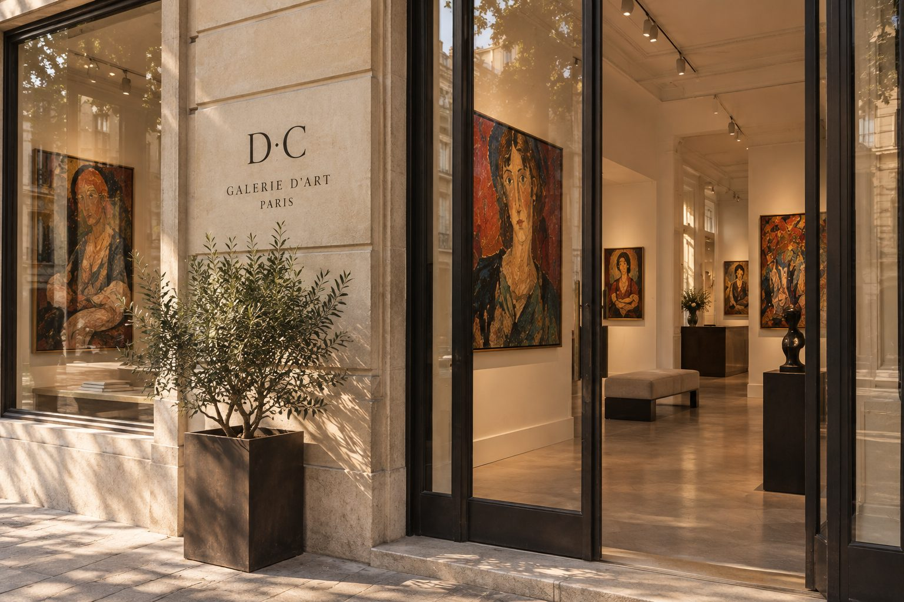
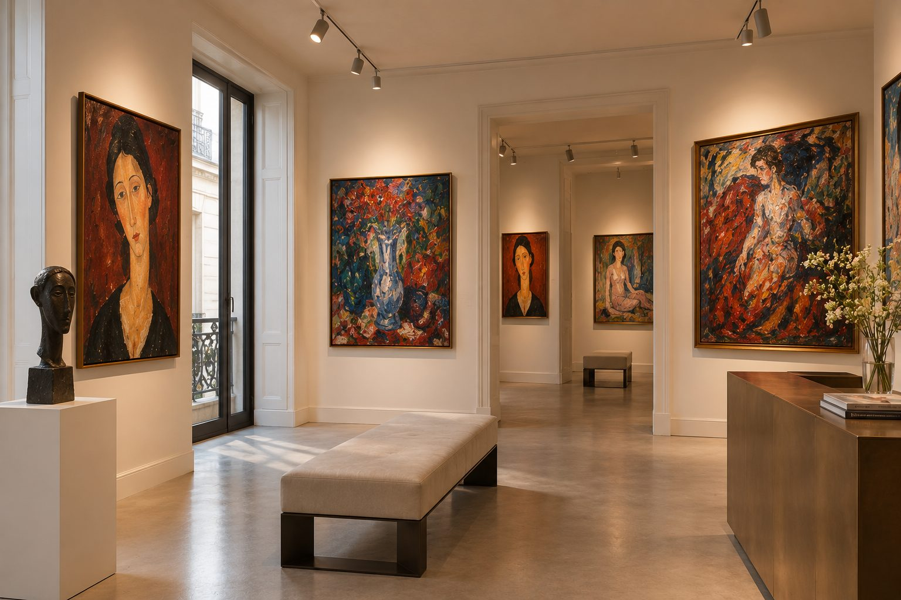
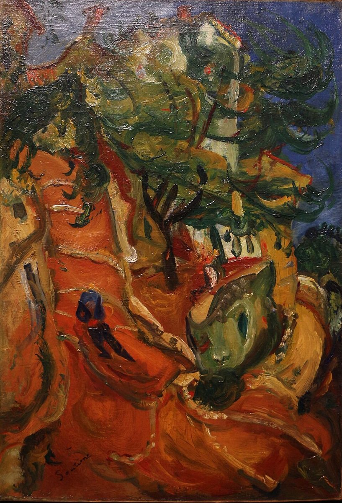
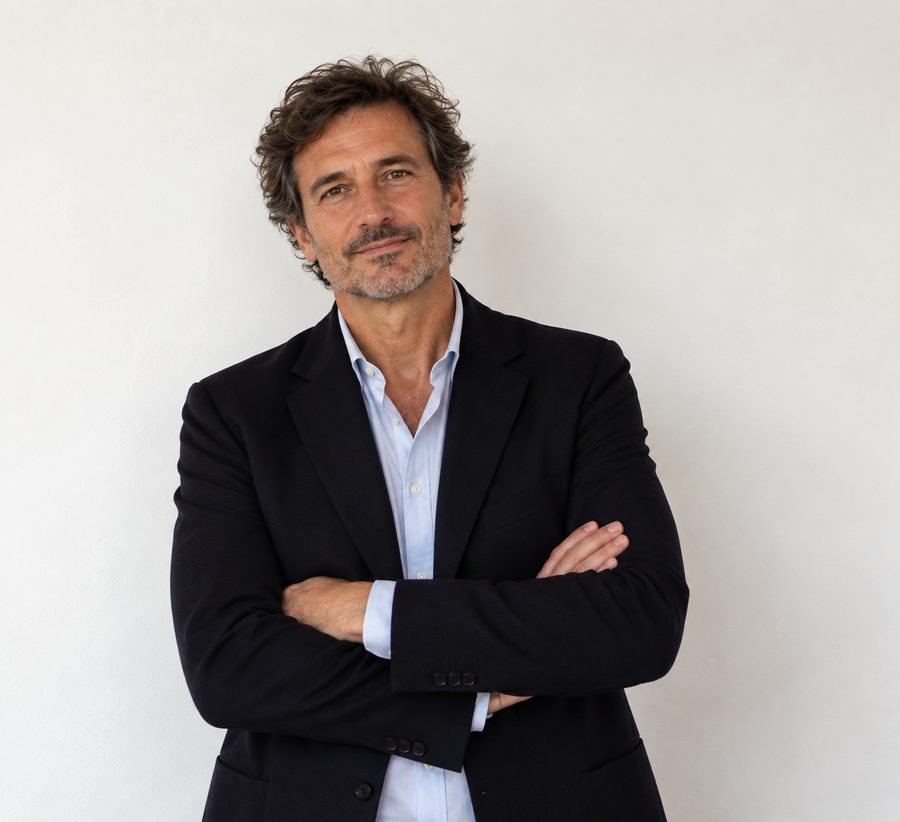

Modigliani — Jeanne Hébuterne, 1919
Huile sur toile · 1919


Dedal des Couleurs est une galerie d’art parisienne dédiée à l’expressionnisme, fondée par Monsieur Dechewsky. Passionné de peinture et de sculpture, il y expose des artistes contemporains dans un lieu lumineux, pensé pour prendre le temps de regarder, de comparer et de se laisser surprendre par la couleur.
10 Rue de la république
75000 Paris
Mardi – Samedi
11 h – 19 h
contact@dedal-des-couleurs.fr
Huile sur toile · 1919

Huile sur toile · 1923

Huile sur toile · 1927

Huile sur toile · 1911

Huile sur toile · 1923-1924

Huile sur toile · 1938

« La couleur est une façon de penser. »
— Alexandre Dechewsky
Né à Lyon en 1968, Alexandre Dechewsky grandit entre les ateliers de peintres et les salles du musée des Beaux-Arts. Il se forme à la restauration de tableaux avant de s’installer à Paris, où il découvre les expressionnistes.
En 2012, il ouvre Dédal des Couleurs, rue de la République, avec une conviction : une galerie doit être un lieu où l’on prend le temps de regarder. Il y défend des artistes contemporains sensibles à la couleur et au geste.
28
Novembre 2026
18 h – 22 h
10 Rue de la république
75000 Paris
Pour la rentrée, la galerie réunit six artistes expressionnistes autour d’une même question : que peut la couleur quand elle déborde du cadre ? Peintures, sculptures et dessins seront présentés en présence de Monsieur Dechewsky et des artistes.
L’entrée est libre, sur inscription. Un verre sera offert à partir de 19 h.
S’inscrire ⟶